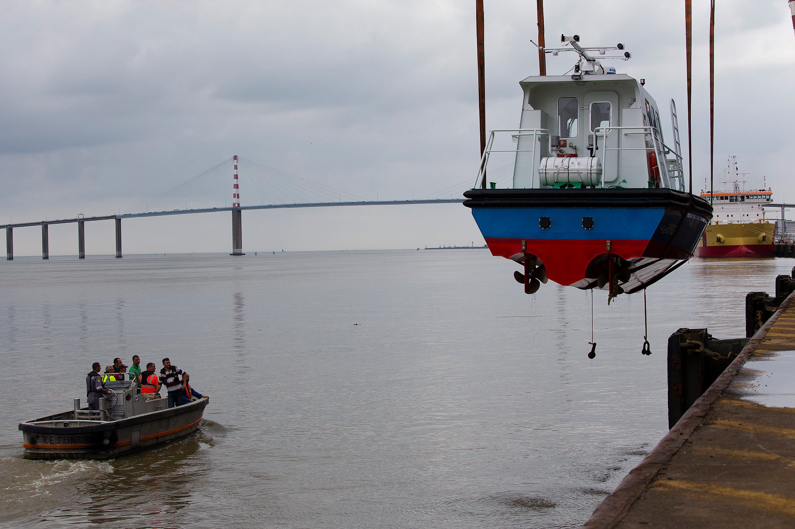

/// 14 Jun 2018 ///
Terminal Grand Ouest

Client : Nantes Saint-Nazaire Port
Reportage avec les dockers du terminal du Grand Ouest à Saint Nazaire pour la sortie de l’eau des bateaux pilotines fabriquées sur le chantier naval Merré près de Nantes avant leur départ pour les ports tunisiens.
Lien vers toute la série sur le site Hans Lucas : Terminal Grand Ouest